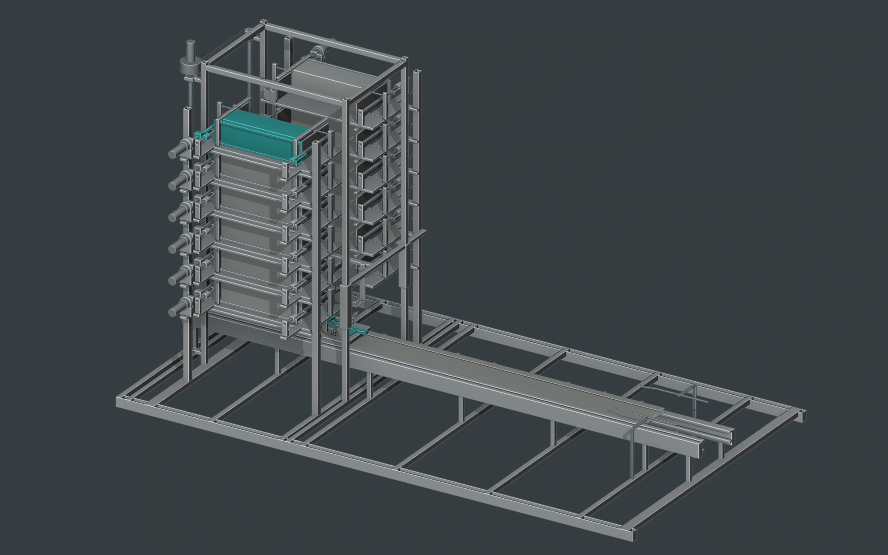
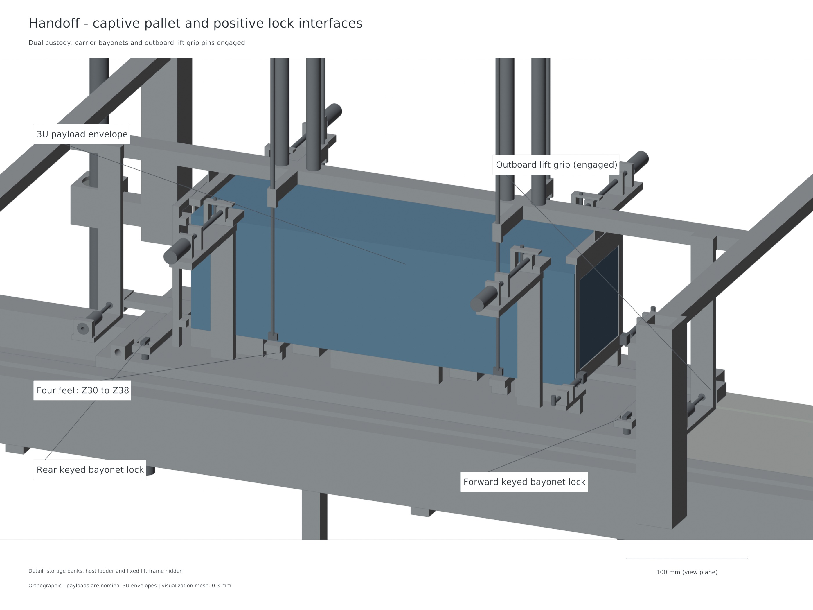
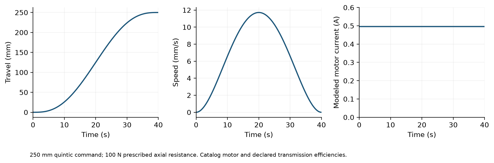

A continuous custody path.
Two fixed six-level cell banks feed one central Z-indexed lift and a carrier with a captive pallet. The current ACR1 arrangement carries twelve nominal 4 kg 3U payloads.
387 native objects. One configuration.




Prove the state before advancing.
- Retain & isolate
Keep nonselected cells restrained. Confirm the selected transfer channel and lift datum.
- Capture & lower
Complete lateral transfer with positive payload/pallet custody, then index the loaded lift to the launch carrier.
- Lock & withdraw
Engage carrier bayonets, prove the handoff, withdraw the lift grips and raise the custody frame clear.
- Release & reset
Enable the shot only after the clear state. Arrest and return the carrier with the pallet still attached.
Fault and isolation branch
Detect stalled transfer → inhibit launcher → retain payload → isolate affected cell → supervised reset/recovery → verify before continuing with an eligible cell.
Modeled custody/interlock logic; physical fault-response validation is subsequent work.
See the actual profiles.


A defined computational configuration.
Evaluated
The integrated twelve-3U ACR1 architecture has editable CAD/STEP, nominal motion and custody checks, finite motor and coupled shot models, and a same-input host-assisted mission comparison.
Subsequent development
Instrumented hardware correlation, environment testing and payload/host qualification remain future work. Gen6 mixed-size studies have their own configuration and evidence.